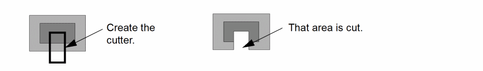
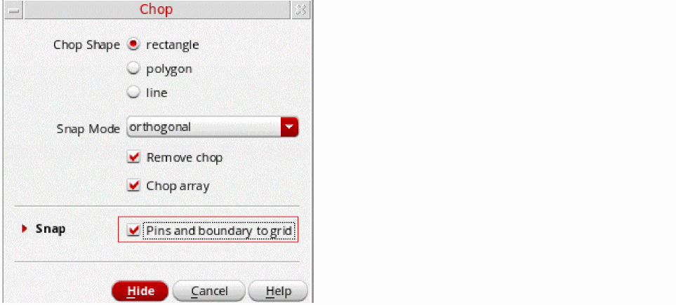
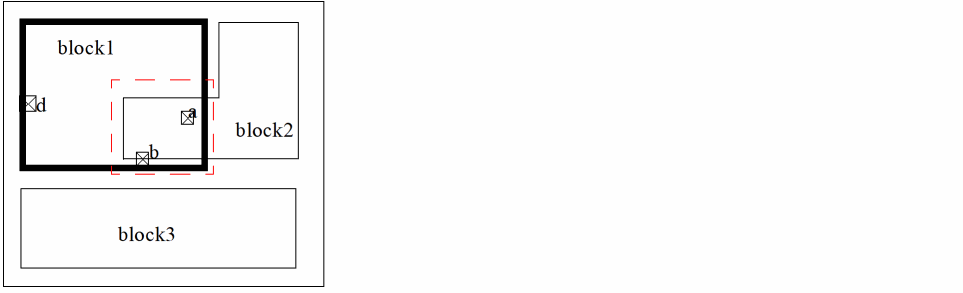
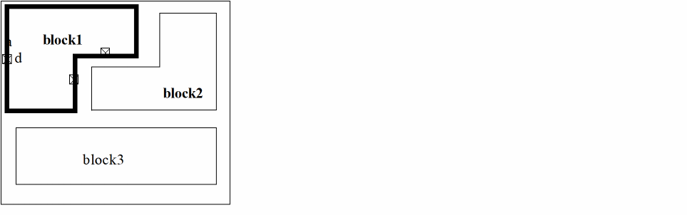
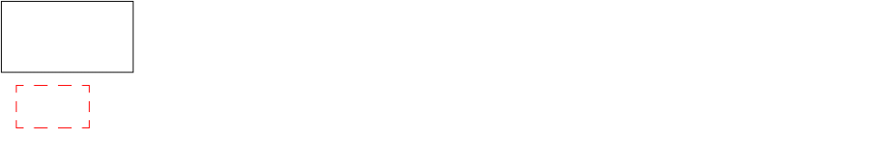
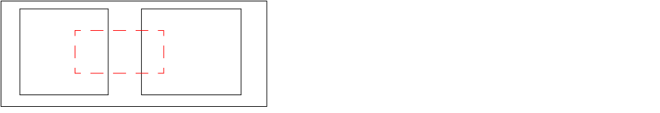

Chopping an Object in Level-1 Editing Mode
Use the Chop command in Level-1 Editing mode to cut away part of a place and route boundary without entering Edit In Place mode. To do this,
- Select the boundary to be chopped.
- Draw a rectangle in such a way that it intersects at least one of the edges of the boundary.
-
Chop the boundary with respect to this rectangle
If you create a polygonal cutter, you must double-click to complete the polygon cutter and the chop. If you cut a hole in an object, it is redrawn as a polygon with a cut line.
You can select the shapes to be chopped either before or after you launch the Chop command. You cannot chop a place and route boundary into multiple pieces. You cannot chop pins at all.
Chopped objects are snapped to a grid depending on the block type.
During the snapping operation, if one pin (X) overlaps with another pin (Y) that is on the same layer and already snapped, the snap operation aborts with an error message:
*WARNING* Pin (Y) overlaps an already placed Pin (X) at location 2.4:294.6.
If there are many such pins overlapping with the already snapped pin, a list of these pins is provided in a similar error message.
A pin that is assigned a status of firm or locked is not moved. If a grid is not initialized, moved pins are not snapped.
To cut away part of an object,
-
From the layout window menu bar, choose Edit – Basic – Chop.
If the Chop form does not appear automatically, pressF3to display it. - Set Chop Shape to rectangle, line, or polygon. If you select line or polygon, set the Snap Mode.
- You can split an object by turning off the Remove chop option in the Chop form and using a rectangle or polygon chop shape. This saves both the area you cut and the original objects.
- In the Snap section, select Pins and boundary to grid to snap the stretched object to a grid depending on the block type. If it is an analog block, the place and route boundary and pin edges are snapped to the manufacturing grid. If it is a digital block, the place and route boundary is snapped to the placement grid and the pin centers are snapped to the routing grid. Pins with placement status unplaced, fixed, locked, or unknown are not snapped, even if they were touching the boundary before the reshape.
- Click Hide.
- Select one or more objects.
- Click to enter the first corner of the rectangle cutter.
-
Click to enter the opposite corner of the rectangle cutter.
The second click completes the chop.
Chopping a Place and Route Boundary at Level 1
If the Snap – Pins and boundary to grid option is on, the chopping boundary is snapped depending on the block type.
| Block Type | Snap Behavior |
|---|---|
|
The chopping boundary is snapped to the manufacturing grid. Pin edges are snapped to the closest boundary edge. |
|
During boundary chopping, pins with placement status placed are automatically snapped to the closest edge. Pins with placement status unplaced, fixed, locked, or unknown are not moved, even if they were touching the boundary before it was chopped.
To chop a block in post-selection mode:
-
With Level-1 Editing mode enabled, choose Edit – Basic – Chop from the layout window menu bar.
If the Chop form does not appear automatically, pressF3to display it.
 - In the Chop form, set Chop Shape to rectangle and turn on Pins and boundary to grid in the Snap section to snap the object to its respective grid.
-
In the Palette assistant, make sure Soft Blocks P&R Boundary is selectable.
You are prompted to point to the shape to be chopped. -
Select the Level-1 PR Boundary of the object to chop.
You are prompted to point to the first corner of the chop rectangle. -
Point to the first corner.
You are prompted to point to the second corner of the chop rectangle. -
Point at the second corner.
When the cutter is completed, the chop operation completes.
If the boundaries of the rectangle do not intersect the edges of the PR boundary to be modified, the place and route boundary is not chopped.
You can also chop multiple boundaries in a single operation.

Examples
The picture below shows you what happens when you collapse three edges to form a single edge.
The picture below shows a donut-like shape created using the chop operation. You can select a place and route boundary and then draw a rectangle within it to chop it (a). This operation creates a polygon shape figure (b).
You cannot chop a place and route boundary into two or more pieces.
If you select multiple instances of the same master cellview, you need to chop only one of them and the changes are reflected on all the instances. The result, as shown in the picture below, can be i or ii but not iii.
Related Topics
Return to top